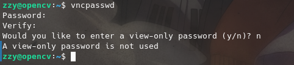
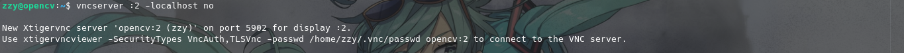
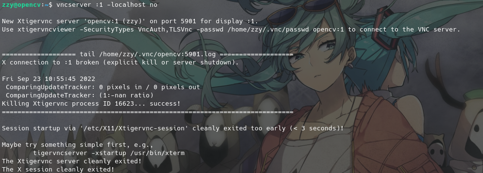

在Ubuntu Desktop（GNOME）下安装VNC并从远程访问
序
在Ubuntu系统上，以Gnome为桌面环境，安装并运行可从远程访问的VNC。VNC服务端选择Tiger VNC。
一、软件安装
使用如下命令安装Tiger VNC。
sudo apt install tigervnc-standalone-server tigervnc-common
需注意桌面环境已经成功配置，在Ubuntu Desktop环境下可直接使用。
二、配置
配置ufw防火墙放行VNC所需端口，默认为590x/tcp端口，端口号与开启的DISPLAY数有关。
sudo ufw allow 5901/tcp && sudo ufw reload
使用vncpasswd命令设置VNC密码，其中「View only」密码为可选项；如下图所示。

然后配置DISPLAY环境变量为当前IP地址，以保证可从外部访问；并启动VNC服务。
vncserver -localhost no

fin、结
目前还有X connection to :2 broken (explicit kill or server shutdown).问题需要解决，正在研究解决方案。

_Herrscher_of_the_Mukau_
二〇二二年九月廿三日 金曜日